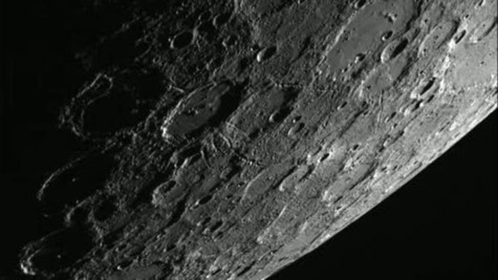
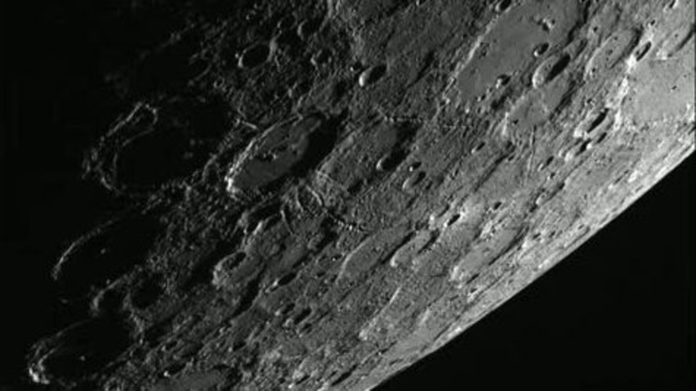
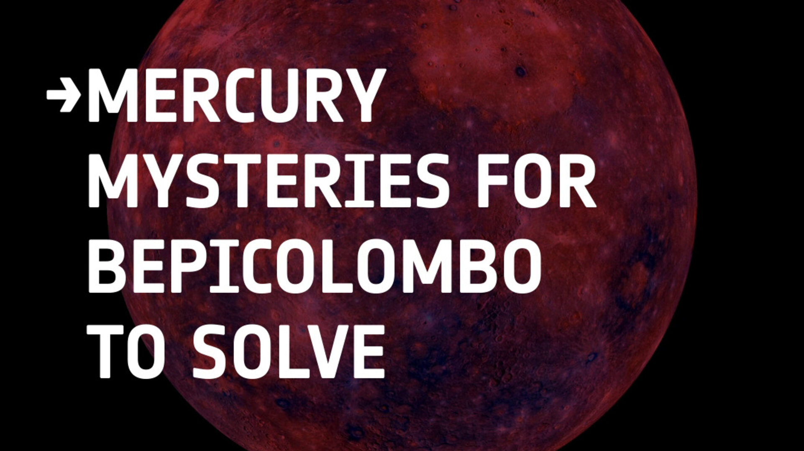

Top Five Mercury mysteries that BepiColombo will solve
Mercury is a desert world which scientists until recently considered quite uninteresting. NASA’s Mariner and MESSENGER missions, however, revealed that there is much more to the smallest and innermost planet of the Solar System than meets the eye. Despite temperatures on its surface rising up to 450°C, there seems to be water ice on Mercury. The planet also appears to have a way too large inner core for its size and a surprising chemical composition. Here are the top five Mercury mysteries that the European-Japanese BepiColombo mission might solve.
1. Where did Mercury form?
Only a little larger than the Moon, Mercury zooms around the Sun on an elliptical orbit every 88 days. At its closest, the planet gets to only one third of the Earth-Sun distance. Has it always been in this place? Scientists are not so sure.
Data from NASA’s MESSENGER spacecraft, which orbited Mercury between 2011 and 2015, revealed that there is too much of the volatile chemical element potassium, as compared to the more stable radioactive thorium, in the material on the surface of Mercury.
“Potassium evaporates very quickly in a hot environment while thorium survives even in very high temperatures,” says Johannes Benkhoff, ESA BepiColombo Project Scientist. “Planets that formed closer to the Sun therefore usually have more thorium as compared to potassium. The ratio of these elements was measured on Earth, Mars, the Moon and Venus and it seems to be correlated with the temperature at which the bodies are believed to have formed. But on Mercury we see much more potassium than we would expect.”
In fact, the ratio of potassium to thorium on Mercury is comparable to that of Mars, which is much farther away from the Sun. Johannes admits that no existing planet formation model can properly explain this deviation. Scientists therefore started looking into the possibility that Mercury may have formed farther away from the Sun, about as far as Mars, and was thrust closer to the star by a collision with another large body. A powerful impact could also explain why Mercury has such an oversized internal core and a relatively thin outer mantel.
Mercury's core, approximately 4000 km in diameter, sits inside the planet's diameter of less than 5000 km, making up over 55% of the planet’s volume. In comparison, Earth has a diameter of about 12 700 km, but its core is only 1200 km across.
“One theory is that this big impact in the past, in addition to possibly pushing Mercury to where it is today, also stripped away most of the crust material and left behind the dense core with only a thin outer layer,” says Johannes.
Some even suggest that the ancient Mercury may have been the mysterious body believed to have struck Earth some 4.5 billion years ago, a collision that, according to some theories, created a large amount of debris that led to the formation of the Moon.
How much light can BepiColombo shed on the mystery of Mercury’s formation? Johannes says that instruments such as the MERTIS Radiometer and Thermal Infrared Spectrometer, the MIXS Imaging X-ray Spectrometer and MGNS Gamma-ray and Neutron Spectrometer will provide a new level of insight into the mineralogical and elemental composition of Mercury’s surface. Orbiting closer to the planet than its predecessor MESSENGER, ESA’s Mercury Planetary Orbiter (MPO), one of the two orbiters comprising the BepiColmbo mission, will image Mercury’s surface with higher resolution and also provide better coverage of the planet’s southern hemisphere compared to MESSENGER.
2. Is there really water on Mercury?
With temperatures on its surface reaching up to 450°C, one wouldn’t expect to find water on Mercury, let alone ice. Surprisingly, when MESSENGER looked into some of the craters around the planet’s poles, it saw what appeared like light reflected from a mass of water ice.
“We have strong indications that there might be water ice in these craters, but it has not been detected directly,” says Johannes. “With the instruments that we have on MPO, we hope to be able not only to measure water content directly and confirm whether there really is water but also to attempt to find out how much of it is there.”
The notion of water ice on the scorched planet is not so absurd, Johannes adds. Mercury rotates around an axis that is perpendicular to its orbital plane. The planet is therefore not tilted like Earth. As a result, rays of the Sun, which appears three times larger than on Earth, never reach inside the polar craters, allowing them to remain constantly ice cold.
Johannes hopes that with the ability of MPO’s instruments to identify the precise elemental composition of the surface of Mercury, scientists might even get an idea of where this ice actually came from. Scientists think the ice probably doesn’t come from Mercury directly. Its origin, however, is another mystery. Comets are the likeliest source of water on Earth, but not many are believed to have struck Mercury in the past.
“Comets in this region are quite rare and usually end up in the Sun because of its strong gravity,” says Johannes. “The ice may have come from asteroids that have collided with Mercury throughout its evolution. Thanks to the cold temperatures in the shaded craters, the ice may have survived there for tens of millions of years.”
Although BepiColombo will not provide a definite answer, its thorough measurements of the polar areas can provide some hints about the origin of Mercury’s ice.
3. Is Mercury dead or alive?
Unlikely to host life, with a parched, seemingly dead surface, Mercury has always been an underdog of Solar System exploration. When the MESSENGER spacecraft finally took a close look at the planet’s surface, however, it found that there might be more going on on Mercury than one would expect.
The mission found strange geological features, unknown from other planets, dotting the areas inside and around some of Mercury’s craters. These dents in the surface, or hollows, as the scientists call them, appear to be caused by the evaporation of material from inside Mercury.
“The interesting thing is that these hollows appear to be fairly recent,” says Johannes. “It appears that there is some volatile material coming up from the outer layer of Mercury and sublimating into the surrounding space, leaving behind these strange features.”
Since BepiColombo will commence its survey of Mercury ten years after the end of the MESSENGER mission, the scientists hope that they might find evidence of the hollows changing, either growing or shrinking. That would mean that Mercury is still an active, living planet, and not a dead world like the Moon.
“If we prove that these hollows are changing, that would be one of the most fantastic results we could get with BepiColombo,” says Johannes. “The process driving the creation of these hollows is totally unknown. It might be caused by the heat or by solar particles bombarding the surface of the planet. It’s something completely new and everyone is looking forward to getting more data.”
4. Why is Mercury so dark?
 

Access the video
With its crater-ridden dusty surface, Mercury might seem quite similar to the Earth’s natural satellite, the Moon. At least at first glance. At closer inspection, and for reasons that scientists don’t yet understand, Mercury appears much darker. The planet reflects only about two-thirds as much light as material collected from the Moon.
The MERTIS thermal infrared spectrometer aboard the MPO will create a detailed map of the distribution of minerals on Mercury’s surface. By providing better accuracy and resolution of the elemental composition compared to the MESSENGER data, MERTIS and other MPO instruments will help answer the question why Mercury is so dark.
“There are various explanations as to why Mercury is as dark as it is,” says Johannes. “It’s possible that the material on its surface is similar to what we can see on other planets but the extreme heat on Mercury makes those materials appear darker. There is also a possibility that what we see on the surface is graphite, which is very dark as well. A graphite rich layer could have formed inside the planet as it was cooling down. Some of this material may have been brought to the surface during further evolution.”
5. How come Mercury has a magnetic field?
Not too many planets have a magnetic field. Among the rocky planets of the inner Solar System, only Mercury and Earth have one. Mars used to have a magnetic field in the past and lost it. Mercury appears too small to have one. Yet, it still does, even though it’s one hundred times weaker than the magnetic field of Earth. Scientists wonder what sustains this magnetic field despite the odds stacked against it.
Earth’s magnetic field is generated by the fast spinning of its liquid iron core. As for Mercury, scientists used to think that the core, due to the planet’s small size, must have cooled down and solidified since the planet’s formation. Is that really the case?
“Mercury’s core must be partially molten to explain this magnetism,” says Johannes. “We can also measure tides on the surface of Mercury, suggesting there must be liquid inside the planet. As Mercury orbits around the Sun and interacts with its gravity, we expect a bulge to form and change its size while moving around the Sun.”
At its largest, this bulge, according to some estimates, can be up to 14 metres high. Following Mercury throughout its journey around the Sun, which takes the planet from as close as 46 million kilometres to as far as 70 million kilometres away from the Sun, BepiColombo will be able to makes precise measurements of the changes in the bulge. The data will help scientists to better estimate the size of the inner liquid core.
Mercury’s magnetic field also appears shifted 400 kilometres to the north and not centred in the middle of the planet like that of Earth.
The two orbiters comprising the BepiColombo mission, ESA’s MPO and the Mercury Magnetospheric Orbiter (Mio) of the Japanese Aerospace Exploration Agency (JAXA), will study Mercury’s magnetic field in greater detail than any spacecraft before and shed light on these perplexing questions. The two orbiters will travel through different areas of Mercury’s magnetosphere and on different timescales. They will measure simultaneously how the magnetic field changes over time and in space, and attempt to explain how the close proximity of the Sun and interaction with the powerful solar wind affect the magnetic field.
Understanding Mercury’s magnetic field in a greater detail will also help astronomers gain further insight into what is going on inside the mysterious planet.

Access the video